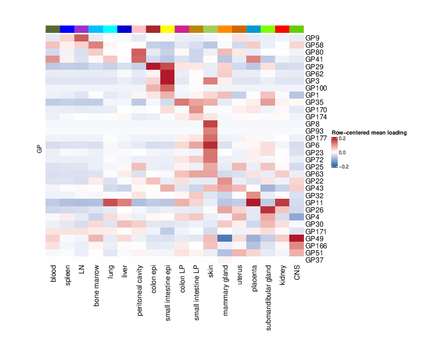
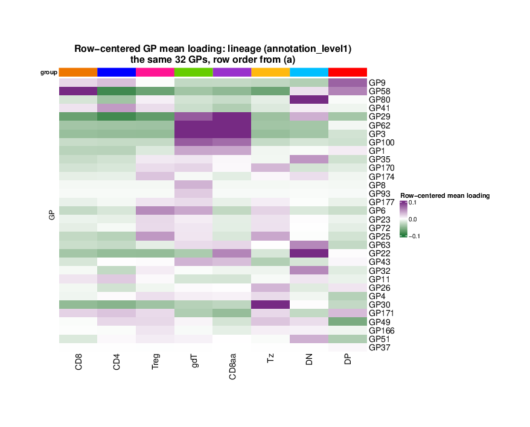
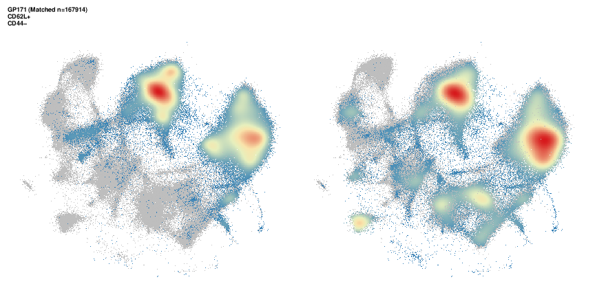
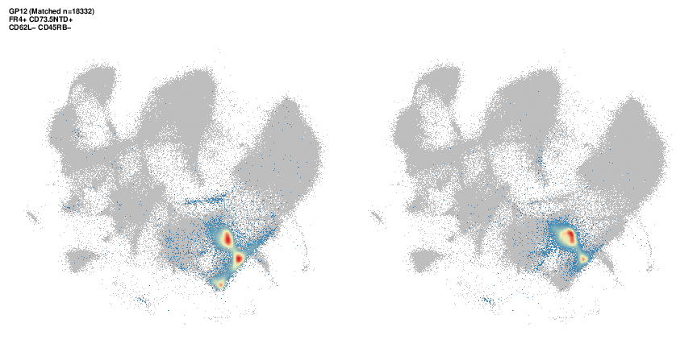
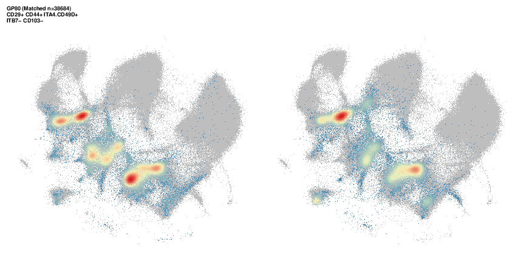

Last updated: 2026-09-10
Checks: 7 0
Knit directory:
immgenT-GP-analysis/analysis/
This reproducible R Markdown analysis was created with workflowr (version 1.7.2). The Checks tab describes the reproducibility checks that were applied when the results were created. The Past versions tab lists the development history.
Great! Since the R Markdown file has been committed to the Git repository, you know the exact version of the code that produced these results.
Great job! The global environment was empty. Objects defined in the global environment can affect the analysis in your R Markdown file in unknown ways. For reproduciblity it’s best to always run the code in an empty environment.
The command set.seed(1) was run prior to running the
code in the R Markdown file. Setting a seed ensures that any results
that rely on randomness, e.g. subsampling or permutations, are
reproducible.
Great job! Recording the operating system, R version, and package versions is critical for reproducibility.
Nice! There were no cached chunks for this analysis, so you can be confident that you successfully produced the results during this run.
Great job! Using relative paths to the files within your workflowr project makes it easier to run your code on other machines.
Great! You are using Git for version control. Tracking code development and connecting the code version to the results is critical for reproducibility.
The results in this page were generated with repository version 284d321. See the Past versions tab to see a history of the changes made to the R Markdown and HTML files.
Note that you need to be careful to ensure that all relevant files for
the analysis have been committed to Git prior to generating the results
(you can use wflow_publish or
wflow_git_commit). workflowr only checks the R Markdown
file, but you know if there are other scripts or data files that it
depends on. Below is the status of the Git repository when the results
were generated:
Ignored files:
Ignored: .DS_Store
Ignored: .claude/
Ignored: analysis/.DS_Store
Ignored: analysis/.Rhistory
Ignored: analysis/assets/.DS_Store
Ignored: captions/
Ignored: code/.DS_Store
Ignored: code/other/topic_flashier_20250212.R
Ignored: code/other/topic_wrapper_20250215_alldata_backfit.sh
Ignored: data
Ignored: experiments/
Ignored: figures/.DS_Store
Ignored: figures/final-selected/.DS_Store
Ignored: figures/final-selected/Figure 1/.DS_Store
Ignored: figures/final-selected/Figure 2/.DS_Store
Ignored: figures/final-selected/Figure 5/.DS_Store
Ignored: figures/final-selected/Figure S1/.DS_Store
Ignored: internal/
Ignored: log/
Ignored: output/.DS_Store
Ignored: output/Figure2/
Ignored: plan/
Ignored: tables/
Ignored: tmp/
Note that any generated files, e.g. HTML, png, CSS, etc., are not included in this status report because it is ok for generated content to have uncommitted changes.
These are the previous versions of the repository in which changes were
made to the R Markdown (analysis/Figure6.Rmd) and HTML
(docs/Figure6.html) files. If you’ve configured a remote
Git repository (see ?wflow_git_remote), click on the
hyperlinks in the table below to view the files as they were in that
past version.
| File | Version | Author | Date | Message |
|---|---|---|---|---|
| html | 5874416 | Ziang Zhang | 2026-09-10 | Build site: main Figure 4 inserted, Extended Data back to 1-7 |
| Rmd | 4307b28 | Ziang Zhang | 2026-09-10 | New main Figure 4, and fold the cluster heatmap into Extended Data Figure 2 |
| html | bf4f612 | Ziang Zhang | 2026-09-09 | Build site: Extended Data back to 1-8 |
| Rmd | 6f01135 | Ziang Zhang | 2026-09-09 | Pull the tissue figure back out of Extended Data; ED is 1-8 again |
| html | a7a481f | Ziang Zhang | 2026-09-09 | Build site: the rebuilt Figure 1d and the Extended Data renumbering |
| Rmd | c233cd8 | Ziang Zhang | 2026-09-09 | Extended Data reorganisation: split the tissue/cluster figure, renumber 3-8 |
| html | 796eeba | Ziang Zhang | 2026-09-04 | Build site: the three corrected captions |
| Rmd | 2344a4a | Ziang Zhang | 2026-09-04 | Three captions corrected where the published text and the panel disagree |
| html | 1e88d7e | Ziang Zhang | 2026-09-04 | Build site: published captions and titles across all 24 pages |
| Rmd | 0267e5b | Ziang Zhang | 2026-09-04 | Captions from the published manuscript; trim editor notes off the page code |
| html | 19c977f | Ziang Zhang | 2026-09-02 | Build site: Extended Data 5-7 renumbered, Figure S5 page rebuilt |
| Rmd | 1e5721a | Ziang Zhang | 2026-09-02 | Extended Data 5-7 renumbered, and Figure S5 assembled as one stacked figure |
| html | ae03072 | Ziang Zhang | 2026-08-19 | Build site: six pages rebuilt after the prose cleanup |
| Rmd | adc2327 | Ziang Zhang | 2026-08-19 | Site prose: finish taking internal notes off the pages |
| html | eeca07b | Ziang Zhang | 2026-08-05 | Keep pre-refactor provenance in panel comments off the published pages |
| Rmd | 5651d0e | Ziang Zhang | 2026-08-05 | Extended Data tables: reorder to six, rebuild Table 1, drop internal notes |
| html | cbcec52 | Ziang Zhang | 2026-07-30 | Build site: Extended Data Figure naming |
| Rmd | 66aa029 | Ziang Zhang | 2026-07-30 | Name the Extended Data figures as published on the site |
| html | ac650a0 | Ziang Zhang | 2026-07-30 | Build site: Figure S5 (ex-S6a) and Figure S6 as a-f |
| Rmd | c9b020f | Ziang Zhang | 2026-07-30 | Split Figure S6’s protein-program heatmap out as Figure S5 |
| html | 732ac8d | Ziang Zhang | 2026-07-29 | Build site: caption alignment with captions_20260729_final.docx |
| Rmd | 8d73953 | Ziang Zhang | 2026-07-28 | Align captions with captions_20260729_final.docx |
| html | ae21d37 | Ziang Zhang | 2026-07-28 | Build site: republish after the reorder commits |
| html | d538aa2 | Ziang Zhang | 2026-07-28 | Build site: reordered Figures 6 / S6 / S3 and the new Figure 7b page |
| Rmd | 4c07670 | Ziang Zhang | 2026-07-28 | Reorder Figures 6, S6 and S3; make the ex-S5 figure Figure 7b |
| html | 029b0ae | Ziang Zhang | 2026-07-28 | Build site. |
| Rmd | 0f5b5da | Ziang Zhang | 2026-07-28 | Align all figure captions with captions_20260728_final.docx |
| html | 58eab27 | Ziang Zhang | 2026-07-28 | Build site: Fig. 6i-k caption on the curated CD69 GP subset |
| Rmd | 589a0ed | Ziang Zhang | 2026-07-28 | Fig. 6i-k: say the 10 CD69 GPs are curated, not the top 10 |
| html | 3fc3789 | Ziang Zhang | 2026-07-27 | Republish all 24 pages |
| html | 1390a03 | Ziang Zhang | 2026-07-27 | Republish all 24 pages |
| html | adaef21 | Ziang Zhang | 2026-07-27 | Build site: panel fixes and PDF-derived assets |
| html | 5b19858 | Ziang Zhang | 2026-07-27 | Build site. |
| Rmd | ffe285c | Ziang Zhang | 2026-07-27 | Reorganize figures/ and untrack local-only exploration notes |
| Rmd | 91ee059 | Ziang Zhang | 2026-07-26 | Select each panel’s code block by name, not by line number |
| html | 91ee059 | Ziang Zhang | 2026-07-26 | Select each panel’s code block by name, not by line number |
| Rmd | 06552b8 | Ziang Zhang | 2026-07-14 | Update Figure 6b heatmap layout |
| html | 06552b8 | Ziang Zhang | 2026-07-14 | Update Figure 6b heatmap layout |
| html | 92021bf | Ziang Zhang | 2026-07-02 | Build site. |
| Rmd | db7a5cd | Ziang Zhang | 2026-07-02 | Recover 3 data-provenance gaps into pipeline scripts |
| html | 827c89b | Ziang Zhang | 2026-07-02 | Build site. |
| Rmd | 8ac7f9f | Ziang Zhang | 2026-07-02 | Add data provenance notes to each script; remove conversational |
| Rmd | f9db962 | Ziang Zhang | 2026-07-02 | Simplify layout: drop old code/script folders, rename |
| html | c6e5086 | Ziang Zhang | 2026-07-02 | Build site. |
| html | 5a79883 | Ziang Zhang | 2026-07-02 | Build site. |
| Rmd | 2b0e445 | Ziang Zhang | 2026-07-02 | Fix GitHub source links to point at the new |
| html | cf1d0ac | Ziang Zhang | 2026-07-02 | Build site. |
| Rmd | 06b2461 | Ziang Zhang | 2026-07-02 | Initial commit: immgenT-GP-analysis |
| html | 06b2461 | Ziang Zhang | 2026-07-02 | Initial commit: immgenT-GP-analysis |
All panels are produced by script/Figure6.R.
The code below is shown for reference (not re-executed on this page);
the images are its pre-rendered output.
Data loading, shared across all panels below.
# Figure 6. GPs and tissue.
#
# Panels produced:
# 6a Max AUC (organ) vs max AUC (level-1 lineage) scatter, per GP.
# 6b GP37+ rate by lineage, mammary gland vs. the same lineage elsewhere.
# 6c Marker genes of the 7 organ-specific GPs: per-GP gene-score heatmap.
# 6d As 6a, but organ AUC vs Level-2 (fine-grained sub-lineage/cluster)
# AUC, with the 7 organ-specific GPs (red) and a contrasting
# cluster-specific set (blue) highlighted.
# 6e Alluvial diagram: organ of origin -> GP -> Level-2 cell type, for
# GP+ cells of the 7 organ-specific GPs.
#
# Required inputs (data/) -- see code/README.md's "Data provenance" table
# for the full picture:
# L_pm_filtered.rds, F_pm_filtered.rds [code/pipeline/01b_filter_cells.R]
# igt1_96_..._ADTonly.Rds [primary input Seurat object]
# level_1_AUC_list_figure_no_thymocytes_healthy.rds,
# level_2_AUC_list_figure_no_thymocytes_healthy.rds,
# organ_simplified_AUC_list_figure_no_thymocytes_healthy.rds
# [code/pipeline/02_compute_auc.R]
library(ggplot2)
library(ggrepel)
library(patchwork)
library(dplyr)
library(tidyr)
library(purrr)
library(tibble)
library(Matrix)
library(viridis)
library(cowplot)
library(ggalluvial)
data_path <- "data/"
figure_path <- "figures/final-selected/Figure 6/"
# ============================================================
# Load data (healthy, non-thymocyte reference)
# ============================================================
level_1_AUC_list <- readRDS(paste0(
data_path, "level_1_AUC_list_figure_no_thymocytes_healthy.rds"
))
level_2_AUC_list <- readRDS(paste0(
data_path, "level_2_AUC_list_figure_no_thymocytes_healthy.rds"
))
organ_AUC_list <- readRDS(paste0(
data_path, "organ_simplified_AUC_list_figure_no_thymocytes_healthy.rds"
))
# Metadata is read from the Seurat object directly.
seurat_meta <- readRDS(paste0(
data_path, "igt1_96_withtotalvi20260206_clean_ADTonly.Rds"
))@meta.data
L_pm_filtered <- readRDS(paste0(data_path, "L_pm_filtered.rds"))
seurat_meta_filtered <- seurat_meta[rownames(L_pm_filtered), ]
# Rename K## to GP## for display consistency
colnames(L_pm_filtered) <- gsub("^K", "GP", colnames(L_pm_filtered))
colnames(level_1_AUC_list$auc) <- gsub("^K", "GP", colnames(level_1_AUC_list$auc))
colnames(level_2_AUC_list$auc) <- gsub("^K", "GP", colnames(level_2_AUC_list$auc))
colnames(level_2_AUC_list$threshold) <- gsub("^K", "GP", colnames(level_2_AUC_list$threshold))
colnames(organ_AUC_list$auc) <- gsub("^K", "GP", colnames(organ_AUC_list$auc))
colnames(organ_AUC_list$threshold) <- gsub("^K", "GP", colnames(organ_AUC_list$threshold))
# Restrict reference to healthy, non-thymocyte cells
seurat_meta_filtered_no_thymocytes_healthy <- seurat_meta_filtered %>%
filter(annotation_level1 != "thymocyte", condition_broad == "healthy")
# The 7 organ-specific GPs highlighted throughout this figure (caption 6d/6e)
gps_of_interest <- c("GP3", "GP6", "GP11", "GP26", "GP29", "GP37", "GP177")
# Labels a highlighted point with its top categories above `threshold` AUC.
top_cats_label <- function(factor_name, auc_matrix, positive_mask, threshold = 0.85, n = 3) {
vals <- auc_matrix[, factor_name]
vals <- vals[positive_mask[, factor_name]]
vals <- sort(vals[vals > threshold], decreasing = TRUE)
cats <- names(vals)[seq_len(min(n, length(vals)))]
if (length(cats) == 0) return(factor_name)
paste0(factor_name, ":\n", paste(cats, collapse = "\n"))
}# ============================================================
# 6a: Max AUC Organ vs Level-1
# ============================================================
level_1_small_count <- table(seurat_meta_filtered_no_thymocytes_healthy$annotation_level1)
level_1_small_count <- names(level_1_small_count[level_1_small_count < 1000])
level_1_AUC <- level_1_AUC_list$auc
level_1_AUC <- level_1_AUC[!rownames(level_1_AUC) %in% level_1_small_count, ]
organ_AUC <- organ_AUC_list$auc
organ_small_count <- table(seurat_meta_filtered_no_thymocytes_healthy$organ_simplified)
organ_small_count <- names(organ_small_count[organ_small_count < 100])
organ_AUC <- organ_AUC[!rownames(organ_AUC) %in% organ_small_count, ]
# Positivity masks: mean loading in category > overall mean -> high loading predicts membership
healthy_cells <- rownames(seurat_meta_filtered_no_thymocytes_healthy)
L_healthy <- L_pm_filtered[healthy_cells, ]
overall_mean <- colMeans(L_healthy, na.rm = TRUE)
level_1_cat_mean <- t(sapply(rownames(level_1_AUC), function(cat) {
idx <- seurat_meta_filtered_no_thymocytes_healthy$annotation_level1 == cat
colMeans(L_healthy[idx, , drop = FALSE], na.rm = TRUE)
}))
level_1_AUC_positive <- sweep(level_1_cat_mean, 2, overall_mean, "-") > 0
organ_cat_mean <- t(sapply(rownames(organ_AUC), function(cat) {
idx <- seurat_meta_filtered_no_thymocytes_healthy$organ_simplified == cat
colMeans(L_healthy[idx, , drop = FALSE], na.rm = TRUE)
}))
organ_AUC_positive <- sweep(organ_cat_mean, 2, overall_mean, "-") > 0
level_1_AUC_masked <- level_1_AUC
level_1_AUC_masked[!level_1_AUC_positive] <- NA
level_1_AUC_max <- apply(level_1_AUC_masked, 2, max, na.rm = TRUE)
level_1_AUC_max_name <- apply(level_1_AUC_masked, 2, function(x) rownames(level_1_AUC_masked)[which.max(x)])
o <- order(level_1_AUC_max, decreasing = TRUE)
table_level_1_AUC <- data.frame(
Factor = colnames(level_1_AUC)[o], Max_AUC = level_1_AUC_max[o], Annotation = level_1_AUC_max_name[o]
)
organ_AUC_masked <- organ_AUC
organ_AUC_masked[!organ_AUC_positive] <- NA
organ_AUC_max <- apply(organ_AUC_masked, 2, max, na.rm = TRUE)
organ_AUC_max_name <- apply(organ_AUC_masked, 2, function(x) rownames(organ_AUC_masked)[which.max(x)])
max_AUC_df <- data.frame(
Factor = table_level_1_AUC$Factor,
annotation_Level1 = table_level_1_AUC$Annotation,
annotation_Organ = organ_AUC_max_name[match(table_level_1_AUC$Factor, names(organ_AUC_max))],
Max_AUC_Organ = organ_AUC_max[match(table_level_1_AUC$Factor, names(organ_AUC_max))],
Max_AUC_Level1 = table_level_1_AUC$Max_AUC
)
df <- max_AUC_df %>% mutate(residual = Max_AUC_Level1 - Max_AUC_Organ, abs_res = abs(residual))
# Factors to highlight: AUC > 0.9 in at least one axis (organ or level-1)
highlighted_factors <- df %>%
filter(is.finite(residual), Max_AUC_Organ > 0.9 | Max_AUC_Level1 > 0.9) %>%
pull(Factor)
label_above <- df %>%
filter(Factor %in% highlighted_factors, residual > 0) %>%
mutate(nudge_x = -0.035, label_text = sapply(Factor, top_cats_label, auc_matrix = level_1_AUC, positive_mask = level_1_AUC_positive))
label_below <- df %>%
filter(Factor %in% highlighted_factors, residual <= 0) %>%
mutate(nudge_x = 0.035, label_text = sapply(Factor, top_cats_label, auc_matrix = organ_AUC, positive_mask = organ_AUC_positive))
p_6a <- ggplot(df, aes(Max_AUC_Organ, Max_AUC_Level1)) +
geom_point(alpha = 0.3, size = 1.8) +
geom_point(data = label_above, color = "#1f78b4", alpha = 0.8, size = 1.8) +
geom_point(data = label_below, color = "#e31a1c", alpha = 0.8, size = 1.8) +
geom_abline(slope = 1, intercept = 0, linetype = "dashed", color = "black") +
coord_cartesian(xlim = c(0.46, 1.04), ylim = c(0.5, 1.02), expand = FALSE) +
labs(x = "Max AUC (Organ Simplified)", y = "Max AUC (Level-1)", title = "Max AUC: Organ vs Level-1") +
theme_minimal(base_size = 13) +
geom_text_repel(
seed = 42,
data = label_above, aes(label = label_text), color = "#1f78b4", size = 2.5, lineheight = 0.85,
direction = "y", nudge_x = label_above$nudge_x, segment.color = "#1f78b4",
arrow = arrow(length = unit(0.008, "npc"), type = "closed", angle = 20),
force = 3, force_pull = 0.1, box.padding = 0.4, point.padding = 0.15,
max.time = 10, max.iter = 2e4, max.overlaps = 20, min.segment.length = 0.01, segment.alpha = 0.7
) +
geom_text_repel(
seed = 42,
data = label_below, aes(label = label_text), color = "#e31a1c", size = 2.5, lineheight = 0.85,
direction = "y", nudge_x = label_below$nudge_x, segment.color = "#e31a1c",
arrow = arrow(length = unit(0.008, "npc"), type = "closed", angle = 20),
force = 3, force_pull = 0.1, box.padding = 0.4, point.padding = 0.15,
max.time = 10, max.iter = 2e4, max.overlaps = 20, min.segment.length = 0.01, segment.alpha = 0.7
)
ggsave(filename = paste0(figure_path, "6a.pdf"), plot = p_6a, width = 8, height = 8, dpi = 300)
| Version | Author | Date |
|---|---|---|
| 5874416 | Ziang Zhang | 2026-09-10 |
Fig. 6a. Scatterplot showing each GP’s prediction (AUC) of organ of origin (x-axis) versus lineage (y-axis). GPs reaching AUC > 0.9 on either axis are colored and labeled (organ-specific in red; lineage-specific in blue).
# ============================================================
# 6b: GP37+ rate by lineage, mammary gland vs. elsewhere
# ============================================================
plot_gp_threshold_group_activation_rate <- function(
gp, organ, threshold, loading_mat, organ_info, group_info,
group_label = "Level-2", base_size = 13, min_in_organ = 10,
group_colors = ZemmourLib::immgent_colors$level2, fallback_group_color = "grey60",
reference = c("not_in_group", "not_in_organ")
) {
reference <- match.arg(reference)
if (!gp %in% colnames(loading_mat)) stop(sprintf("GP '%s' not found in loading matrix.", gp))
if (!organ %in% organ_info) stop(sprintf("Organ '%s' not found in organ_info.", organ))
loading <- loading_mat[, gp]
keep <- !(is.na(loading) | is.na(organ_info) | is.na(group_info))
loading <- loading[keep]
organ_info <- organ_info[keep]
group_info <- as.character(group_info[keep])
in_organ <- organ_info == organ
positive <- loading > threshold
group_levels <- sort(unique(group_info))
rate_df <- data.frame(
group = group_levels,
n_in_organ = vapply(group_levels, function(l) sum(group_info == l & in_organ), integer(1)),
n_pos_in_organ = vapply(group_levels, function(l) sum(group_info == l & in_organ & positive), integer(1))
)
if (reference == "not_in_group") {
rate_df$n_ref <- vapply(group_levels, function(l) sum(group_info != l & in_organ), integer(1))
rate_df$n_pos_ref <- vapply(group_levels, function(l) sum(group_info != l & in_organ & positive), integer(1))
ref_label <- "Not in group (same organ)"
title_vs <- sprintf("%s vs. same-organ non-group", organ)
} else {
rate_df$n_ref <- vapply(group_levels, function(l) sum(group_info == l & !in_organ), integer(1))
rate_df$n_pos_ref <- vapply(group_levels, function(l) sum(group_info == l & !in_organ & positive), integer(1))
ref_label <- "Not in organ (same group)"
title_vs <- sprintf("%s vs. same-group non-organ", organ)
}
rate_df$rate_in_organ <- rate_df$n_pos_in_organ / rate_df$n_in_organ
rate_df$rate_ref <- rate_df$n_pos_ref / rate_df$n_ref
rate_df <- rate_df[rate_df$n_in_organ >= min_in_organ, , drop = FALSE]
if (nrow(rate_df) == 0) stop(sprintf("No %s type has >= %d cells in '%s'.", group_label, min_in_organ, organ))
long_df <- data.frame(
group = rep(rate_df$group, 2),
type = factor(rep(c("In organ", ref_label), each = nrow(rate_df)), levels = c("In organ", ref_label)),
rate = c(rate_df$rate_in_organ, rate_df$rate_ref)
)
level_order <- rate_df$group[order(rate_df$rate_in_organ, decreasing = TRUE)]
long_df$group <- factor(long_df$group, levels = level_order)
fill_values <- group_colors[as.character(level_order)]
missing_colors <- is.na(fill_values)
if (any(missing_colors)) {
fill_values[missing_colors] <- fallback_group_color
warning(sprintf(
"%s annotations missing from group_colors and colored %s: %s",
group_label, fallback_group_color, paste(level_order[missing_colors], collapse = ", ")
))
}
alpha_vals <- c(1, 0.35)
names(alpha_vals) <- c("In organ", ref_label)
ggplot(long_df, aes(x = group, y = rate, fill = group, alpha = type)) +
geom_col(position = position_dodge(width = 0.8), width = 0.75, color = "grey35", linewidth = 0.15) +
scale_fill_manual(values = fill_values, guide = "none") +
scale_alpha_manual(values = alpha_vals, guide = guide_legend(override.aes = list(fill = "grey40"))) +
labs(
x = sprintf("%s annotation", group_label),
y = sprintf("Proportion of cells with %s > %.3g", gp, threshold),
alpha = NULL,
title = sprintf("%s+ rate by %s: %s", gp, group_label, title_vs),
subtitle = sprintf("threshold = %.3g; %s types with < %d cells in %s dropped", threshold, group_label, min_in_organ, organ)
) +
theme_minimal(base_size = base_size) +
theme(axis.text.x = element_text(angle = 45, hjust = 1), legend.position = "top")
}
p_6b <- plot_gp_threshold_group_activation_rate(
gp = "GP37",
organ = "mammary gland",
threshold = organ_AUC_list$threshold["mammary gland", "GP37"],
min_in_organ = 100,
loading_mat = L_pm_filtered[rownames(seurat_meta_filtered_no_thymocytes_healthy), ],
organ_info = seurat_meta_filtered_no_thymocytes_healthy$organ_simplified,
group_info = seurat_meta_filtered_no_thymocytes_healthy$annotation_level1,
group_label = "Level-1",
group_colors = ZemmourLib::immgent_colors$level1,
reference = "not_in_organ"
)
ggsave(filename = paste0(figure_path, "6b.pdf"), plot = p_6b, width = 8, height = 5, dpi = 300)
Fig. 6b. Proportion of GP37-active cells in each lineage in the mammary gland compared with all other organs (faded color bar).
# ============================================================
# 6c: organ marker genes - per-GP gene-score heatmap
# ============================================================
F_pm_filtered <- readRDS(paste0(data_path, "F_pm_filtered.rds"))
colnames(F_pm_filtered) <- gsub("^F", "GP", colnames(F_pm_filtered))
D_scale <- diag(1 / apply(F_pm_filtered, 2, function(x) max(abs(x), na.rm = TRUE)))
F_pm_scaled <- F_pm_filtered %*% D_scale
colnames(F_pm_scaled) <- colnames(F_pm_filtered)
n_top_genes <- 20
min_loading <- 0.25
F_sub <- F_pm_scaled[, gps_of_interest, drop = FALSE]
selected_genes <- lapply(gps_of_interest, function(gp) {
vals <- F_sub[, gp]
names(sort(vals[vals > min_loading], decreasing = TRUE))[seq_len(min(n_top_genes, sum(vals > min_loading)))]
})
selected_genes <- unique(unlist(selected_genes))
# Diagonal gene ordering by dominant GP (highest loading)
GP_orders <- c("GP37", "GP26", "GP6", "GP177", "GP3", "GP29", "GP11")
dominant_gp <- apply(F_sub[selected_genes, , drop = FALSE], 1, function(x) GP_orders[which.max(x[GP_orders])])
dominant_loading <- mapply(function(g, gp) F_sub[g, gp], selected_genes, dominant_gp)
gene_order_df <- data.frame(Gene = selected_genes, dominant_gp = factor(dominant_gp, levels = GP_orders), loading = dominant_loading, stringsAsFactors = FALSE)
gene_order_df <- gene_order_df[order(gene_order_df$dominant_gp, -gene_order_df$loading), ]
heatmap_gene_order <- gene_order_df$Gene
plot_df_hm <- as.data.frame(F_sub[heatmap_gene_order, , drop = FALSE])
plot_df_hm$Gene <- rownames(plot_df_hm)
plot_df_hm <- tidyr::pivot_longer(plot_df_hm, cols = -Gene, names_to = "GP", values_to = "Loading")
plot_df_hm$GP <- factor(plot_df_hm$GP, levels = GP_orders)
plot_df_hm$Gene <- factor(plot_df_hm$Gene, levels = rev(heatmap_gene_order))
limit_hm <- max(abs(plot_df_hm$Loading), na.rm = TRUE)
p_gene_heatmap <- ggplot(plot_df_hm, aes(x = GP, y = Gene, fill = Loading)) +
geom_tile() +
scale_fill_gradient2(low = "steelblue", mid = "white", high = "firebrick", midpoint = 0, limits = c(-limit_hm, limit_hm), name = "Loading") +
labs(title = "Top positive genes per organ GP", x = NULL, y = NULL) +
theme_minimal(base_size = 9) +
theme(axis.text.x = element_text(angle = 45, hjust = 1, size = 9), axis.text.y = element_text(size = 8), panel.grid = element_blank(), plot.title = element_text(face = "bold", size = 11))
pdf(paste0(figure_path, "6c.pdf"), width = 5, height = 16, useDingbats = FALSE)
print(p_gene_heatmap)
dev.off()
Fig. 6c. Genes associated with the seven organ-specific GPs shown in (a). Heatmap of the per-GP scaled gene scores for the top upregulated genes of each GP (top 20 per GP, gene score > 0.25; blue, negative; red, positive).
# ============================================================
# 6d prep: Max AUC Organ vs Level-2
# ============================================================
level_2_AUC <- level_2_AUC_list$auc
level_2_small_count <- table(seurat_meta_filtered_no_thymocytes_healthy$annotation_level2)
level_2_small_count <- names(level_2_small_count[level_2_small_count < 100])
level_2_AUC <- level_2_AUC[!rownames(level_2_AUC) %in% level_2_small_count, ]
level_2_cat_mean <- t(sapply(rownames(level_2_AUC), function(cat) {
idx <- seurat_meta_filtered_no_thymocytes_healthy$annotation_level2 == cat
colMeans(L_healthy[idx, , drop = FALSE], na.rm = TRUE)
}))
level_2_AUC_positive <- sweep(level_2_cat_mean, 2, overall_mean, "-") > 0
# 6d/6e reuse `organ_AUC_max_name`, but recomputed against the Level-2
# category-count filter.
organ_AUC_masked_l2 <- organ_AUC
organ_AUC_positive_l2 <- sweep(
t(sapply(rownames(organ_AUC), function(cat) {
idx <- seurat_meta_filtered_no_thymocytes_healthy$organ_simplified == cat
colMeans(L_healthy[idx, , drop = FALSE], na.rm = TRUE)
})),
2, overall_mean, "-"
) > 0
organ_AUC_masked_l2[!organ_AUC_positive_l2] <- NA
organ_AUC_max <- apply(organ_AUC_masked_l2, 2, max, na.rm = TRUE)
organ_AUC_max_name <- apply(organ_AUC_masked_l2, 2, function(x) rownames(organ_AUC_masked_l2)[which.max(x)])
# 6d's own max-AUC table, over the Level-2 categories.
level_2_AUC_masked <- level_2_AUC
level_2_AUC_masked[!level_2_AUC_positive] <- NA
level_2_AUC_max <- apply(level_2_AUC_masked, 2, max, na.rm = TRUE)
level_2_AUC_max_name <- apply(level_2_AUC_masked, 2, function(x) {
rownames(level_2_AUC_masked)[which.max(x)]
})
o_l2 <- order(level_2_AUC_max, decreasing = TRUE)
table_level_2_AUC <- data.frame(
Factor = colnames(level_2_AUC)[o_l2],
Max_AUC = level_2_AUC_max[o_l2],
Annotation = level_2_AUC_max_name[o_l2]
)
df_l2 <- data.frame(
Factor = table_level_2_AUC$Factor,
annotation_Level2 = table_level_2_AUC$Annotation,
annotation_Organ = organ_AUC_max_name[match(table_level_2_AUC$Factor, names(organ_AUC_max))],
Max_AUC_Organ = organ_AUC_max[match(table_level_2_AUC$Factor, names(organ_AUC_max))],
Max_AUC_Level2 = table_level_2_AUC$Max_AUC
) %>%
mutate(residual = Max_AUC_Level2 - Max_AUC_Organ, abs_res = abs(residual))
# ============================================================
# 6d: Max AUC Organ vs Level-2, 7 organ-specific GPs (red) vs.
# contrasting cluster-specific GPs (blue) highlighted
# ============================================================
seven_gp_df <- df_l2 |>
dplyr::filter(Factor %in% gps_of_interest) |>
dplyr::mutate(label_text = sapply(Factor, top_cats_label, auc_matrix = level_2_AUC, positive_mask = level_2_AUC_positive, threshold = 0.9, n = 3))
top_left_gps <- c("GP14", "GP36", "GP16", "GP151", "GP21", "GP122", "GP2", "GP171", "GP5", "GP13")
top_left_df <- df_l2 |>
dplyr::filter(Factor %in% top_left_gps) |>
dplyr::mutate(label_text = sapply(Factor, top_cats_label, auc_matrix = level_2_AUC, positive_mask = level_2_AUC_positive, threshold = 0.9, n = 3))
p_6d <- ggplot(df_l2, aes(Max_AUC_Organ, Max_AUC_Level2)) +
geom_point(alpha = 0.2, size = 1.5, color = "grey60") +
geom_point(data = top_left_df, color = "#1f78b4", size = 2.2, alpha = 0.9) +
geom_text_repel(
seed = 42,
data = top_left_df, aes(label = label_text), color = "#1f78b4", lineheight = 0.85, size = 2.5,
direction = "y", nudge_x = -0.1, segment.color = "#1f78b4",
arrow = arrow(length = unit(0.008, "npc"), type = "closed", angle = 20),
force = 4, force_pull = 0.05, box.padding = 0.5, point.padding = 0.15,
max.time = 10, max.iter = 2e4, max.overlaps = 30, min.segment.length = 0.01, segment.alpha = 0.7
) +
geom_point(data = seven_gp_df, color = "#e31a1c", size = 2.2, alpha = 0.9) +
geom_text_repel(
seed = 42,
data = seven_gp_df, aes(label = label_text), color = "#e31a1c", size = 2.5, lineheight = 0.85,
direction = "y", nudge_x = 0.18, xlim = c(1.0, NA), segment.color = "#e31a1c",
arrow = arrow(length = unit(0.008, "npc"), type = "closed", angle = 20),
force = 6, force_pull = 0.02, box.padding = 0.6, point.padding = 0.15,
max.time = 10, max.iter = 2e4, max.overlaps = 30, min.segment.length = 0.01, segment.alpha = 0.7
) +
geom_abline(slope = 1, intercept = 0, linetype = "dashed", color = "black") +
coord_cartesian(xlim = c(0.46, 1.04), ylim = c(0.5, 1.02), expand = FALSE, clip = "off") +
labs(x = "Max AUC (Organ Simplified)", y = "Max AUC (Level-2)", title = "Max AUC: Organ vs Level-2 - organ-specific GPs") +
theme_minimal(base_size = 13) +
theme(plot.margin = margin(10, 80, 10, 80))
ggsave(filename = paste0(figure_path, "6d.pdf"), plot = p_6d, width = 8, height = 8, dpi = 300)
Fig. 6d. As in (a), but predictive performance is measured against level 2 clusters (y-axis). The seven organ-specific GPs from (a) are highlighted in red, and a contrasting set of cluster-specific GPs (high cluster AUC, low organ AUC) in blue.
# ============================================================
# 6e: alluvial, organ -> GP -> Level-2, for GP+ cells of the
# 7 organ-specific GPs
# ============================================================
best_organ_per_gp <- organ_AUC_max_name[gps_of_interest]
gp_thresholds <- mapply(function(gp, organ) organ_AUC_list$threshold[organ, gp], gps_of_interest, best_organ_per_gp)
names(gp_thresholds) <- gps_of_interest
n_cap_gp <- 300
set.seed(42)
alluvial_rows <- lapply(gps_of_interest, function(gp) {
positive_idx <- L_healthy[, gp] > gp_thresholds[gp]
meta_pos <- seurat_meta_filtered_no_thymocytes_healthy[positive_idx, ]
d <- data.frame(gp_program = gp, organ = meta_pos$organ_simplified, level2 = meta_pos$annotation_level2, stringsAsFactors = FALSE)
if (nrow(d) > n_cap_gp) d <- dplyr::slice_sample(d, n = n_cap_gp)
d
})
count_df <- do.call(rbind, alluvial_rows) |>
dplyr::count(organ, gp_program, level2, name = "n") |>
dplyr::filter(!is.na(organ), !is.na(level2), n >= 5)
organ_order <- count_df |> dplyr::summarise(total = sum(n), .by = organ) |> dplyr::arrange(dplyr::desc(total)) |> dplyr::pull(organ)
level2_order <- count_df |> dplyr::summarise(total = sum(n), .by = level2) |> dplyr::arrange(dplyr::desc(total)) |> dplyr::pull(level2)
count_df <- count_df |>
dplyr::mutate(
organ = factor(organ, levels = rev(organ_order)),
gp_program = factor(gp_program, levels = rev(gps_of_interest)),
level2 = factor(level2, levels = rev(level2_order))
)
gp_colors <- ZemmourLib::immgent_colors$organ_simplified[unname(best_organ_per_gp)]
gp_colors[is.na(gp_colors)] <- "grey60"
names(gp_colors) <- gps_of_interest
p_6e <- ggplot(count_df, aes(axis1 = organ, axis2 = gp_program, axis3 = level2, y = n)) +
ggalluvial::geom_alluvium(aes(fill = gp_program), width = 1 / 4, alpha = 0.6, knot.pos = 0.4) +
ggalluvial::geom_stratum(width = 1 / 4, fill = "grey92", color = "grey50", linewidth = 0.3) +
ggplot2::geom_text(stat = ggalluvial::StatStratum, aes(label = after_stat(stratum)), size = 3, angle = 90) +
scale_fill_manual(values = gp_colors, guide = "none") +
scale_x_discrete(limits = c("Organ", "GP", "Level-2"), expand = c(0.12, 0.12)) +
labs(y = "Number of GP+ cells", title = "GP+ cells: organ origin and cell type") +
theme_minimal(base_size = 12) +
theme(panel.grid = element_blank(), axis.text.y = element_blank(), axis.ticks = element_blank()) +
coord_flip()
ggsave(filename = paste0(figure_path, "6e.pdf"), plot = p_6e, width = 20, height = 10, dpi = 300)
Fig. 6e. Alluvial plot showing how tissue-specific GP activity is distributed across clusters. For each organ, GP-active cells are traced to their cluster annotation. Flows are colored by GP, and width is proportional to the number of cells.
sessionInfo()R version 4.5.1 (2025-06-13)
Platform: aarch64-apple-darwin20
Running under: macOS Sequoia 15.6.1
Matrix products: default
BLAS: /System/Library/Frameworks/Accelerate.framework/Versions/A/Frameworks/vecLib.framework/Versions/A/libBLAS.dylib
LAPACK: /Library/Frameworks/R.framework/Versions/4.5-arm64/Resources/lib/libRlapack.dylib; LAPACK version 3.12.1
locale:
[1] en_CA/en_CA/en_CA/C/en_CA/en_CA
time zone: America/Chicago
tzcode source: internal
attached base packages:
[1] stats graphics grDevices utils datasets methods base
loaded via a namespace (and not attached):
[1] vctrs_0.7.3 cli_3.6.6 knitr_1.50 rlang_1.2.0
[5] xfun_0.55 stringi_1.8.9 otel_0.2.0 promises_1.5.0
[9] jsonlite_2.0.0 workflowr_1.7.2 glue_1.8.1 rprojroot_2.1.1
[13] git2r_0.36.2 htmltools_0.5.9 httpuv_1.6.16 sass_0.4.10
[17] rmarkdown_2.30 evaluate_1.0.5 jquerylib_0.1.4 tibble_3.3.0
[21] fastmap_1.2.0 yaml_2.3.12 lifecycle_1.0.5 whisker_0.4.1
[25] stringr_1.6.0 compiler_4.5.1 fs_1.6.6 Rcpp_1.1.1-1.1
[29] pkgconfig_2.0.3 later_1.4.4 digest_0.6.39 R6_2.6.1
[33] pillar_1.11.1 magrittr_2.0.5 bslib_0.9.0 tools_4.5.1
[37] cachem_1.1.0